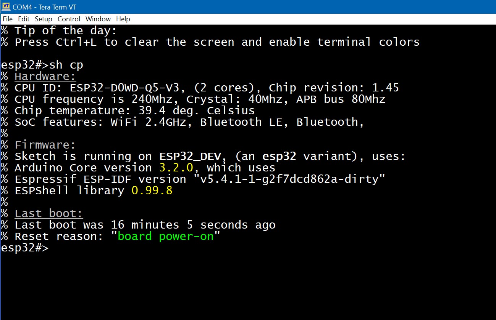
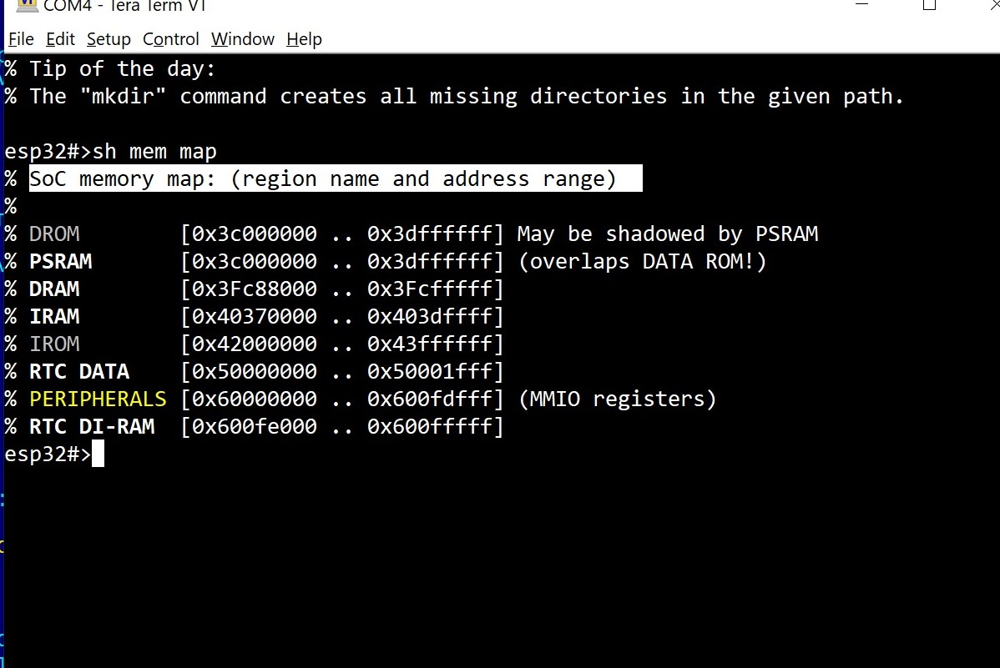
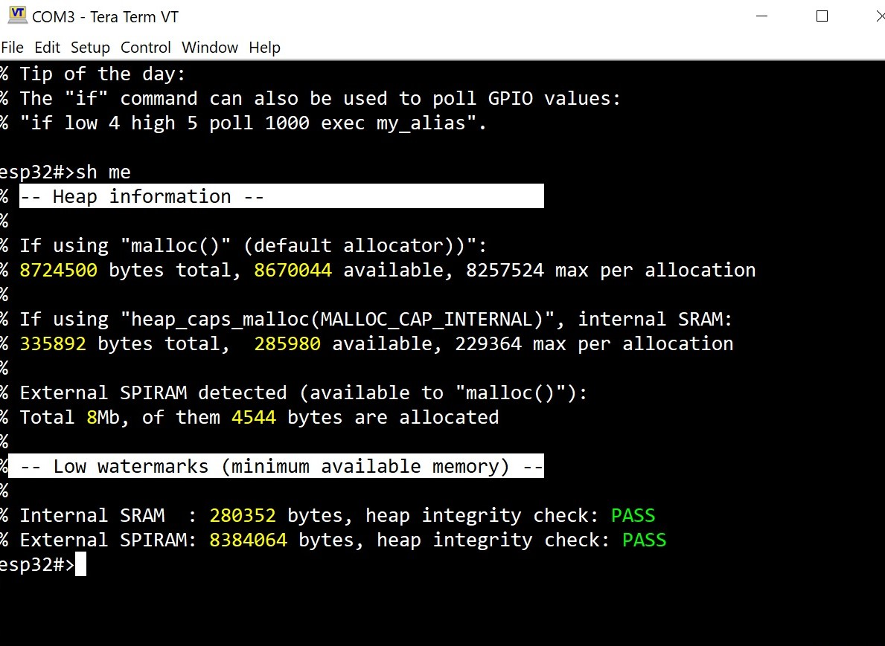

ESP32 processors support changing the CPU frequency at runtime. On the original ESP32, the CPU frequency may also affect the APB bus frequency: if the CPU frequency drops below 80 MHz, the APB frequency becomes equal to the CPU frequency. This affects the timing of PWM peripherals and other hardware modules, but you do not need to worry about it: ESPShell automatically recalculates all timing parameters whenever the APB frequency changes.
| Command | Description and Examples |
|---|---|
| cpu |
Displays a list of supported CPU frequencies: esp32#>cpu % Supported frequencies are: 240, 160, 120, 80, 40, 20 and 10 MHz esp32#> |
| cpu FREQ |
Sets the CPU frequency to FREQ MHz (for example, 240). ESP32 supports 240, 160 and 80 MHz operation. Depending on the crystal oscillator (XTAL) frequency, additional frequencies such as XTAL / 2 and XTAL / 4 may also be available. If an unsupported frequency is specified, ESPShell displays a list of valid values:
esp32#>cpu 1
% 1 MHz is an unsupported frequency
% Supported frequencies are: 240, 160, 120, 80, 40, 20, and 10 MHz
% Invalid 1st argument "1" ("? cpu" for help)
|
show cpuid
Displays hardware and software information:

The output is divided into four sections: Hardware, Flash, Firmware and Last Boot. The first section displays the CPUID, CPU frequency, XTAL frequency, APB bus frequency and CPU core temperature.
The second section contains information about the flash chip, including its size and manufacturer ID.
The firmware section displays version information for components used to build the firmware/sketch, including the Arduino Core version (version mismatches are a common source of problems), the ESP-IDF version and the ESPShell version number.
The final section includes the output of the "uptime" command, which displays system uptime and the reason for the last reset.
ESPShell provides two commands for displaying memory information: show memory and show memory ADDRESS ...
Reference information about the memory map is also available through the command show memory map, which displays memory address ranges and their purpose:

| Command | Description and Examples |
|---|---|
| show memory |
Displays total and available memory visible to the sketch:
 Fig. 3: Output of the "show memory" command
if using malloc() — information related to the standard allocator (malloc, calloc, realloc, strdup, new and free) In addition to the standard free/total/allocated counters, ESPShell also keeps track of peak memory usage since the sketch was started. These values are updated whenever a new memory usage record is reached (separately for SRAM and SPIRAM). Both heaps (Internal SRAM and SPIRAM) are also checked for integrity. The result of the integrity check is displayed as PASS or FAIL. |
| show memory ADDRESS |
show memory ADDRESS [ COUNT ] [signed|unsigned|float|void*|int|char|short] [hex] Displays memory contents starting at the specified address. The address must be given in hexadecimal format, with or without the "0x" prefix. In its simplest form, this command requires only a single argument: an address. The result is a dump of 256 bytes starting at that location. Note that the ESP32 memory architecture is fairly complex. Some regions are accessible only through the instruction bus, some are accessible only from CPU core #0 (ESPShell normally runs on core #0), some can only be accessed as 32-bit words, and so on. Espressif provides memory map documentation for individual ESP32 variants: ESP32-S3, ESP32, etc. Example: Display memory contents starting at address 0x3fc97a30
esp32#>sh mem 0x3fc97a30
0 1 2 3 4 5 6 7 8 9 A B C D E F |0123456789ABCDEF
----------------------------------------------------------+----------------
0000: 01 00 00 00 02 00 00 00 03 00 00 00 9d ff ff ff |................
0010: 0c 0c 03 00 0b 00 00 00 5c 32 ca 3f 00 00 00 00 |........\2.?....
0020: 14 0e 09 3c 2c 2b ff ff 00 c2 01 00 1c 00 00 08 |...<,+..........
0030: 00 01 00 00 00 70 00 00 00 00 00 00 01 00 00 00 |.....p..........
0040: 00 00 00 00 ff ff ff ff 00 00 00 00 00 00 00 00 |................
0050: 00 00 00 00 00 00 00 00 00 00 00 00 02 00 00 00 |................
0060: 00 00 00 00 ff ff ff ff 00 00 00 00 00 00 00 00 |................
0070: 00 00 00 00 00 00 00 00 c8 7a c9 3f ff ff 3f b3 |.........z.?..?.
0080: 00 00 00 00 03 00 00 00 00 00 00 00 00 00 00 00 |................
0090: 00 00 00 00 00 00 00 00 00 40 00 60 c8 bb 07 3c |.........@.`...<
00a0: 00 00 00 00 cc bb 07 3c 00 00 00 00 d0 bb 07 3c |.......<.......<
00b0: 00 00 00 00 d4 bb 07 3c 00 00 00 00 d8 bb 07 3c |.......<.......<
00c0: 00 00 00 00 dc bb 07 3c 00 00 00 00 e0 bb 07 3c |.......<.......<
00d0: 00 00 00 00 e4 bb 07 3c 00 00 00 00 e8 bb 07 3c |.......<.......<
00e0: 00 00 00 00 ec bb 07 3c 00 00 00 00 f0 bb 07 3c |.......<.......<
00f0: 00 00 00 00 f4 bb 07 3c 00 00 00 00 f8 bb 07 3c |.......<.......<
esp32#>
Optional Arguments: count and typeTo specify the number of elements to display, use the COUNT argument:
esp32#>sh mem 0x3fc97a30 32
0 1 2 3 4 5 6 7 8 9 A B C D E F |0123456789ABCDEF
----------------------------------------------------------+----------------
0000: 01 00 00 00 02 00 00 00 03 00 00 00 9d ff ff ff |................
0010: 0c 0c 03 00 0b 00 00 00 5c 32 ca 3f 00 00 00 00 |........\2.?....
esp32#>
If not specified, COUNT defaults to 256. To interpret memory content as a specific data type, use one of the following: To display values in hexadecimal format, add the hex keyword at the end of the command: esp32#>sh mem 0x3fcef000 10 unsigned int hex % The address 0x3fcef000 belongs to the SoC internal D-RAM % Memory is DMA-capable, allows unaligned/byte access % Array of 10 elements, 4 bytes each % Address : Value % 0x3fcef000 : 0x00000000 % 0x3fcef004 : 0x00000000 % 0x3fcef008 : 0x00000000 % 0x3fcef00c : 0x00000000 % 0x3fcef010 : 0x00000000 % 0x3fcef014 : 0x00000000 % 0x3fcef018 : 0x00000000 % 0x3fcef01c : 0x00000000 % 0x3fcef020 : 0x00000000 % 0x3fcef024 : 0x00000000 esp32#> Use esp32#>sh mem 0x50000000 void * % 0x50000000 : 0x344dbbe1 Note: Even though the COUNT was omitted, only one element was displayed due to the type specifier ( esp32#>sh mem 0x50000000 10 void * % Array of 10 elements, 4 bytes each % Address : Value % 0x50000000 : 0x344dbbe1 % 0x50000004 : 0x9d2aa486 % 0x50000008 : 0x476c2e42 % 0x5000000c : 0x40da87ea % 0x50000010 : 0x607b4d64 % 0x50000014 : 0xfc28182e % 0x50000018 : 0x97b54ec4 % 0x5000001c : 0xefe11d7a % 0x50000020 : 0xd703bad6 % 0x50000024 : 0x698b7ad1 esp32#> Note: This command can be used to display array or variable contents, provided their addresses are known. Example: An unsigned integer array is located at address 0x3fc97a30. Display the first three elements: esp32#>sh mem 0x3fc97a30 3 unsigned int % Array of 3 elements, 4 bytes each % Address : Value % 0x3fc97a30 : 1 (0x1 as hex) % 0x3fc97a34 : 2 (0x2 as hex) % 0x3fc97a38 : 3 (0x3 as hex) esp32#> |